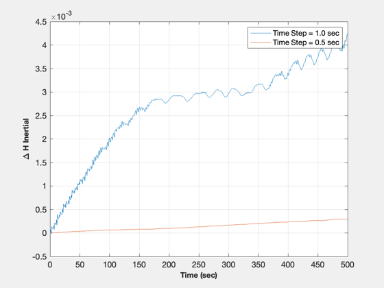
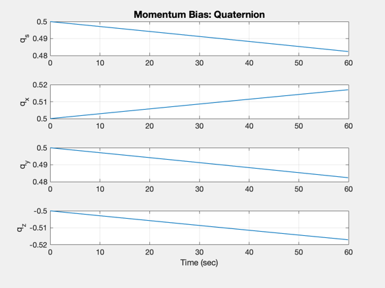
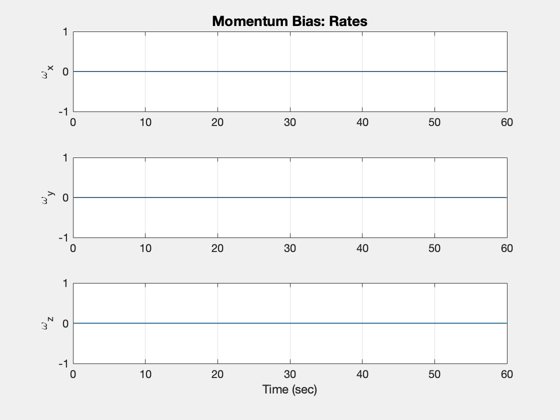
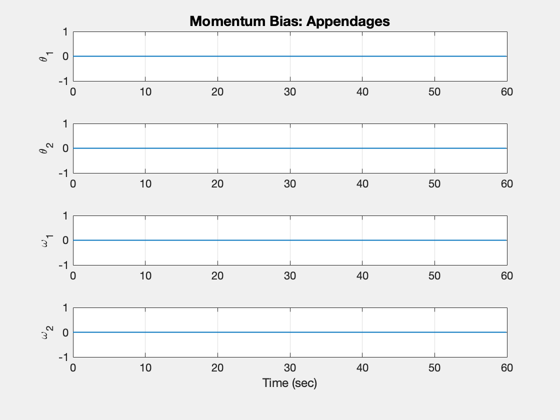
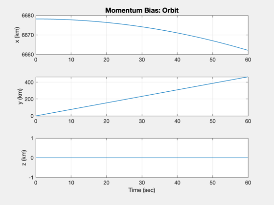
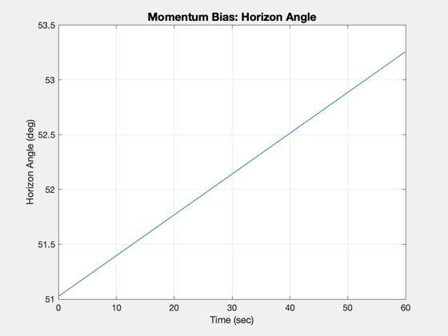

Simulate a momentum bias spacecraft with a telescope on a roll pivot
The momentum wheel is used to control spacecraft pitch orientation.
The script includes an initial test of angular momentum conservation.
It also computes the eigenvalues for the spacecraft when it is earth
pointing.
In the simulation the telescope points at a ground target.
testAngularMomentum = 1;
d = struct();
d.inr0 = diag([1 2 3]);
d.inr1 = diag([1 2 1]);
d.inr2 = diag([0.2 2 0.5]);
d.m0 = 1;
d.m1 = 0;
d.m2 = 0;
d.u1 = [1;0;0];
d.u2 = [1;0;0];
d.rho0 = [0;0;0];
d.rho1 = [0.0;0;0];
d.rho2 = [0;0;0];
d.lambda1 = [0;0;0];
d.lambda2 = [0;0;0];
d.torque0 = [0;0;0];
d.torque1 = 0;
d.torque2 = 0;
tEnd = 60;
dTSim = 0.1;
nSim = ceil(tEnd/dTSim);
jD0 = Date2JD([2014 7 1 0 0 0]);
dT = [0.5 0.25];
if( testAngularMomentum )
n = 1000;
x = [1;0;0;0;.1;0.2;0.3;0;0;0;0.0];
h1 = zeros(1,n);
for k = 1:n
[nU,h] = RHSThreeBody(x,0,d);
h1(k) = Mag(h);
x = RK4('RHSThreeBody',x,dT(1),0,d);
end
x = [1;0;0;0;.1;0.2;0.3;0;0;0;0.0];
h2 = zeros(1,2*n);
for k = 1:2*n
[nU,h] = RHSThreeBody(x,0,d);
h2(k) = Mag(h);
x = RK4('RHSThreeBody',x,dT(2),0,d);
end
t1 = (0:(n -1))*dT(1);
t2 = (0:(2*n-1))*dT(2);
NewFig('|H|')
plot(t1,h1-h1(1),t2,h2-h2(1));
legend('Time Step = 1.0 sec','Time Step = 0.5 sec');
XLabelS('Time (sec)')
YLabelS('\Delta H Inertial')
grid
end
mu = 3.98600436e5;
r = [6678.165;0;0];
v = [0;sqrt(mu/r(1));0];
q = QLVLH(r,v);
w = OmegaLVLH(r,v);
x = [q;w;0;0;0;0];
a = Jacobian('RHSThreeBody',x,0,d);
fprintf(1,'Eigenvalues: Orbit rate = %12.4f rad/s',sqrt(mu/r(1)^2))
eig(a)
lat = 33.51987810*pi/180;
lon = 64.41708930*pi/180;
alt = 2.2;
rTarget = LatLonAltToEF([lat;lon;alt]);
rTarget = [6378.165;0;0];
xOrb = [r;v];
t = 0;
xP = zeros(18,nSim);
for k = 1:nSim
jD = jD0 + t/86400;
mEFToECI = EarthRot( JD2T(jD) );
rECI = mEFToECI*rTarget;
angle = acos(Dot(Unit(-rECI),Unit(xOrb(1:3)-rECI)))*180/pi;
xP(:,k) = [x;xOrb;angle];
xOrb = RK4('FOrb', xOrb, dTSim, t, 'car');
x = RK4('RHSThreeBody',x,dTSim,0,d);
t = t + dTSim;
end
[t, tL] = TimeLabl((0:(nSim-1))*dTSim);
yL = {'q_s' 'q_x' 'q_y' 'q_z' '\omega_x' '\omega_y' '\omega_z' '\theta_1' '\theta_2' '\omega_1' '\omega_2', 'x (km)' 'y (km)' 'z (km)' 'Horizon Angle (deg)'};
Plot2D(t,xP( 1:4,:),tL,yL( 1: 4),'Momentum Bias: Quaternion' );
Plot2D(t,xP( 5:7,:),tL,yL( 5: 7),'Momentum Bias: Rates' );
Plot2D(t,xP( 8:11,:),tL,yL( 8:11),'Momentum Bias: Appendages' );
Plot2D(t,xP(12:14,:),tL,yL(12:14),'Momentum Bias: Orbit' );
Plot2D(t,xP( 18,:),tL,yL( 15),'Momentum Bias: Horizon Angle');
Eigenvalues: Orbit rate = 0.0945 rad/s
ans =
0 + 0.00057843i
0 - 0.00057843i
0 + 0.00057843i
0 - 0.00057843i
0.0027182 + 0i
-0.0027182 + 0i
-2.7105e-20 + 0.0011569i
-2.7105e-20 - 0.0011569i
-0.00083483 + 0i
0.00083483 + 0i
0 + 0i
     